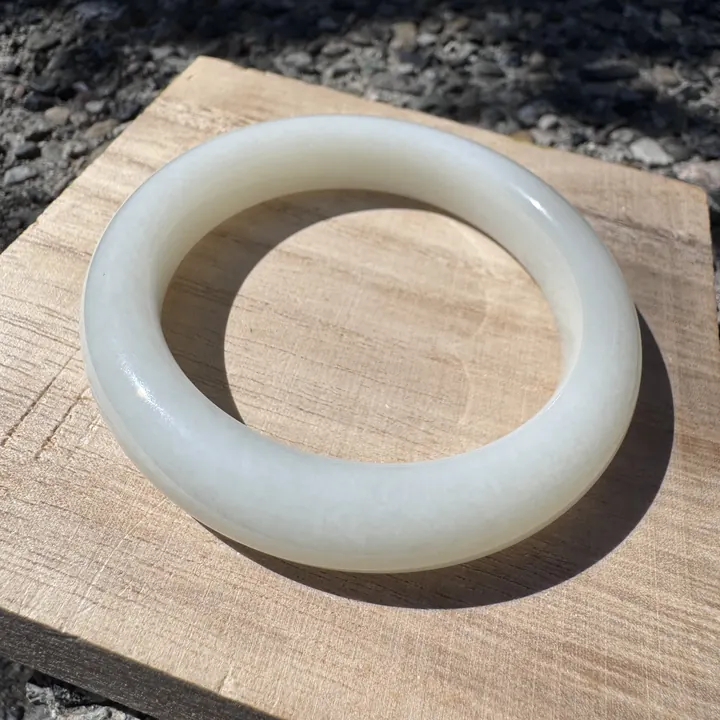

羊脂白玉：一兩黃金難換一兩玉
羊脂白玉不是最白的玉，而是最「油」的玉——像一塊剛切開的羊油，溫潤得讓你忘了它其實是石頭。

核心定義
羊脂白玉是和田玉（軟玉，nephrite）中最受推崇的白色品種——它不是一個科學分級，而是一個文化形容詞：質地像羊的脂肪一樣細膩溫潤、色澤像羊油一樣白中帶暖、光澤像塗了一層油脂。古人說「白如截肪」，指的就是這種「凝脂感」。
和田玉的主要礦物成分是透閃石（tremolite），含量越高、質地越細。當透閃石含量超過 99%、晶粒細如毛氈、顏色潔白微暖、油性十足時，就有資格被稱為「羊脂白玉」。
特徵與分類
| 項目 | 羊脂白玉 | 普通白玉 | 高白俄料 |
|---|---|---|---|
| 色調 | 白中帶微暖 | 白、略帶灰 | 死白、僵白 |
| 光澤 | 油脂光澤 | 蠟狀至油性 | 蠟狀、偏乾 |
| 結構 | 細膩如凝脂 | 可見細微晶粒 | 粒狀感較明顯 |
| 觸感 | 滑潤如油 | 滑順 | 偏乾澀 |
| 油性 | 極佳 | 中等 | 較差 |
重點是：羊脂白不是「最白的白」，而是「最油的白」。市場上很多人以為越白越好，其實「白」只是入門條件，「油、細、糯」才是羊脂玉的靈魂。
科學原理
羊脂白玉的「油感」有科學根據：軟玉是透閃石微晶的氈狀交織結構（interlocking felted texture），晶粒細到肉眼難辨；當光線射入，微晶邊界產生大量漫反射與內反射，看起來就像表面浮著一層油光。這不是真的油，而是「光的化學」。
韌性方面，軟玉的氈狀結構讓它成為全世界最韌的寶石之一——比翡翠還耐敲擊。古人用它雕禮器、祭器，正是看中「寧碎不裂」的堅韌。而這種結構，也是「油潤感」的物理來源。
鑑定與鑑別方法
- 看色調：真羊脂白帶微暖（米白），不是死白
- 看光澤：油脂光澤 vs 蠟狀光澤
- 掂手感：軟玉比重約 2.95，上手沉穩
- 放大鏡：觀察氈狀纖維結構（毛氈紋）
- 謹防「拋光油」：部分商家以拋光或上油偽造油性
市場行情與保養建議
行情上，羊脂白玉籽料以克計價：2026 年的市場參考，頂級新疆籽料羊脂白每克可達新台幣數萬至數十萬元，而普通青海白料每克僅數百元——價差百倍，全看「油性」與「產地」。
收藏提醒：證書只會寫「軟玉」，不會寫「羊脂白玉」——因為它不是法定分級。買羊脂白玉，買的是眼力與信任；價格僅供參考，非投資建議。
常見誤區
恰恰相反，真正的羊脂白玉白中帶微暖色調——死白的俄料反而沒有羊脂資格。「白」是門票，「油」才是主角。
「羊脂白玉」不是國家標準分級用語，多數證書只寫「軟玉」；市場上自稱羊脂的，往往只是商家話術。
冷知識
古人形容它「白如截肪」——「肪」就是動物脂肪。所以羊脂白玉不是說像羊肉，而是像一塊白潤的羊油。
乾隆一生題詠和田玉的詩作上百首，還專門設立「如意館」監製玉器——他收藏的羊脂白玉，如今大多在故宮博物院。
反直覺觀點
在乾隆年間，頂級羊脂白玉的價值確實高於同等重量的黃金——但今天，黃金有國際牌價，羊脂玉卻完全看眼緣。說到底，「難換」的不是重量，是「信任與審美」。
俄料高白又大又便宜，油性卻遠遜新疆籽料——市場上「死白」往往比「微暖」便宜數倍。收藏行家看油不看白，新手卻常被白騙。